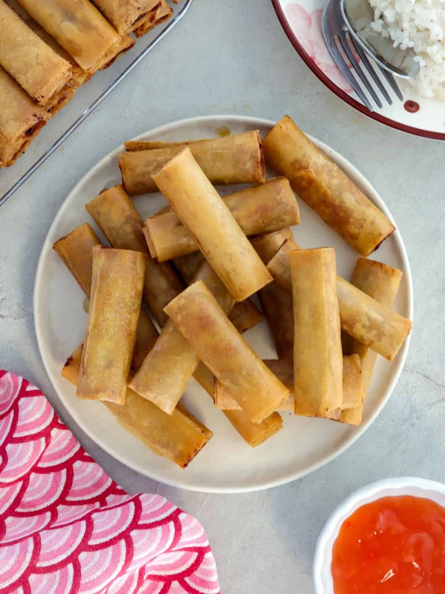
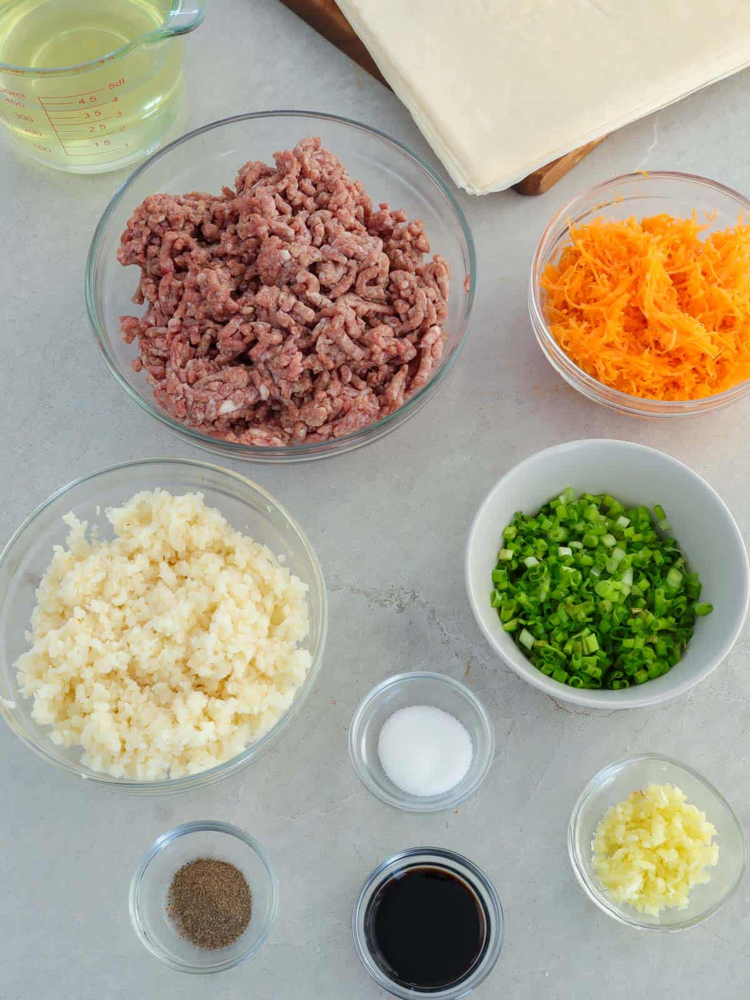

Pork Lumpia Shanghai is a classic Filipino dish featuring a savory mixture of ground meat and vegetables wrapped in a thin pastry.
Lumpia stems from Chinese influences, but Filipinos have made it their own. It is traditionally served with sweet and sour sauce or banana ketchup.

Don't overfill the wrappers, or they might burst during frying. Chilling the meat for 30 minutes before wrapping makes it easier to handle.
In Filipino culture, Lumpia is more than just food—it's a connection to family. It represents adaptability and is a staple at every fiesta.
This recipe brought back so many childhood memories!
This food represents the filipino pride, it's iconic and beloved by many.
Your Rating
Your Review